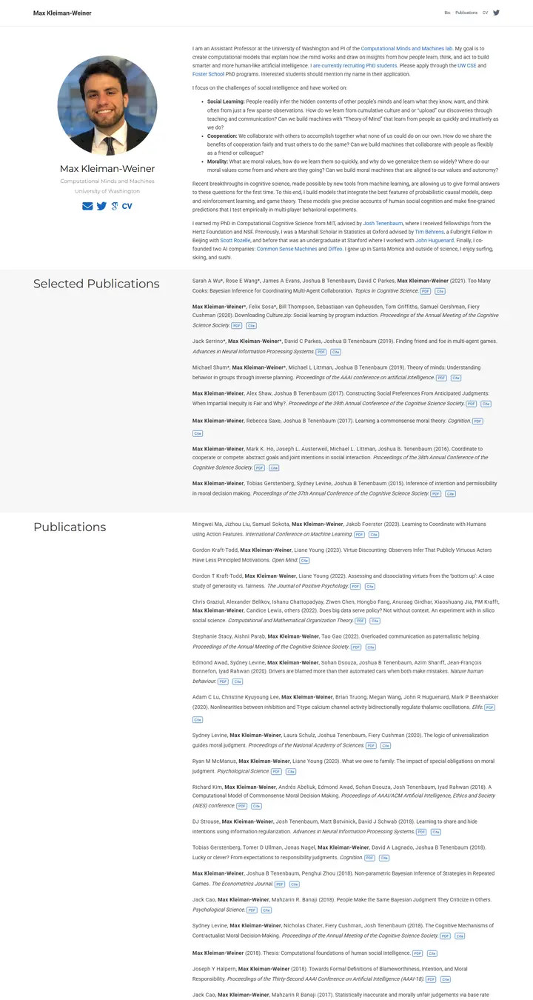
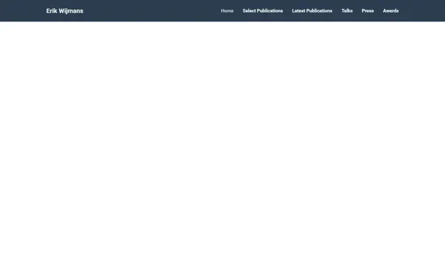
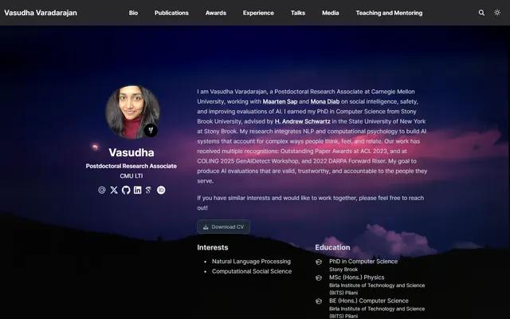

Max Kleiman-Weiner
実験台に置かれた整った教員カード。左に丸いポートレートと軽い Montserrat、右に密な Roboto の文章、そして代表論文が収まる淡いグレーの帯。

表示されたページと照合済みです。
選んだ理由
すっきりしたサイドバーのプロフィールカードに幅広の経歴を合わせ、その後 Selected Publications と Publications を、左にセクション名を置いた交互の色付き帯で見せています。リズムがよく、PDF/Cite のタグも整っています。
以下の説明と DESIGN.md 本文は英語です。コーディングエージェントが同じ一つの版を読めるよう、翻訳していません。
概要
カラーパレット
タイポグラフィ
Roboto
Max Kleiman-Weiner, computational social cognition
Abstract · Method · Results · BibTeX — 0123456789
Montserrat
Max Kleiman-Weiner, computational social cognition
Abstract · Method · Results · BibTeX — 0123456789
余白と形
ページの構成要素
ガイドライン
似たスタイル

Erik Wijmans
スレートネイビーのバーの下に整えた研究ポートフォリオ。大きくゆったりした Roboto の見出し、番号付きの研究テーマ、ライトテーブルの書類のように交互のグレー帯に並ぶ論文カード。

Vasudha Varadarajan
暗い丘陵に夕暮れが降りる写真、続いてミント色の小さな大文字でラベルを付けた図版カードのギャラリーの壁。

Amir Bar
Imperial ブルーの端正な教員案内。白地に Inter、ピル型のリンク、手を伸ばすと数ピクセル浮き上がる論文カード。

Anagh Malik
アプリコットで温めた Barron の表。14px の Lato、オレンジに光る青いリンク、大事な論文は午後遅くの光の帯の中に収まっている。

Christoph Feichtenhofer
学会ホールの横断幕のような Facebook ブルーの帯に続き、赤字の論文名、緑の掲載先、両端揃えのグレーの要旨が長い台帳のように並ぶ。

David B. Lindell
丁寧な編集者が組んだラボノート。Source Serif の本文、Source Sans のラベル、澄んだ青ひとつ、そしてどの論文にも写真が添えて綴じてある。